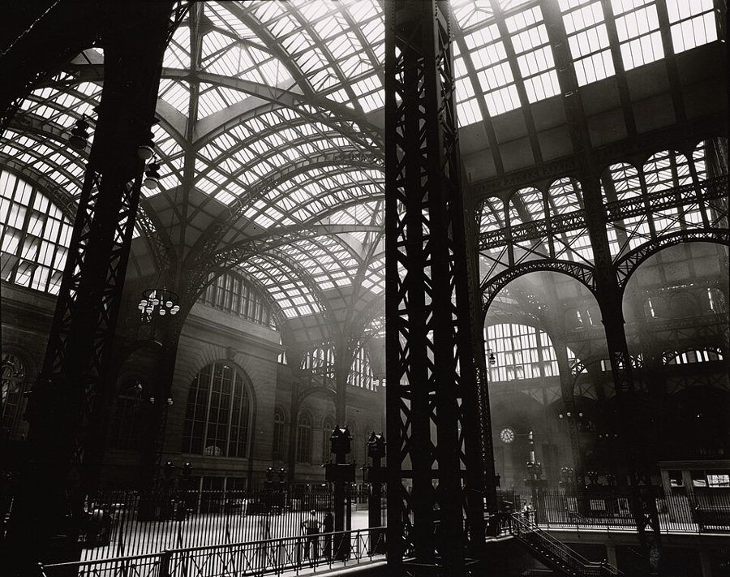
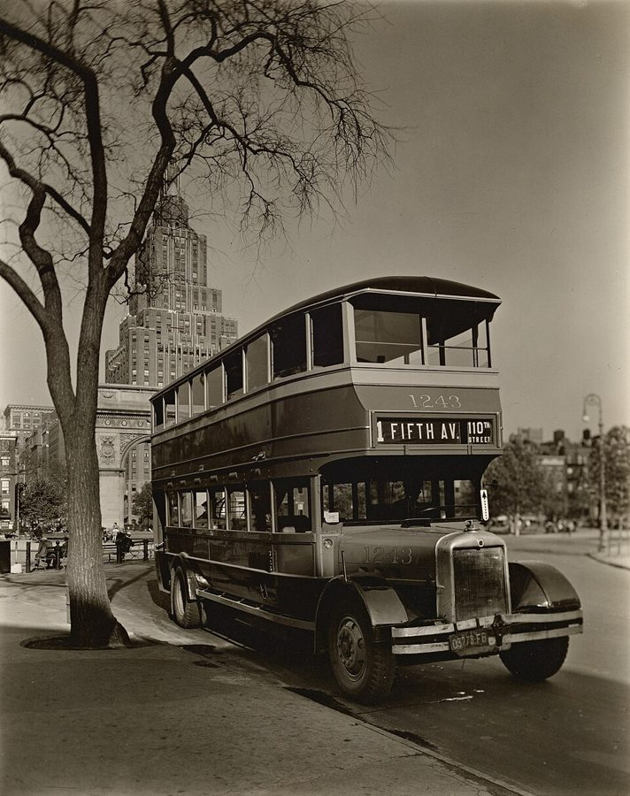
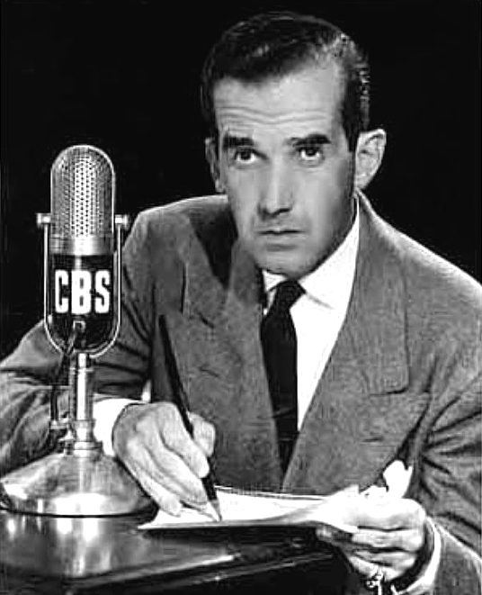
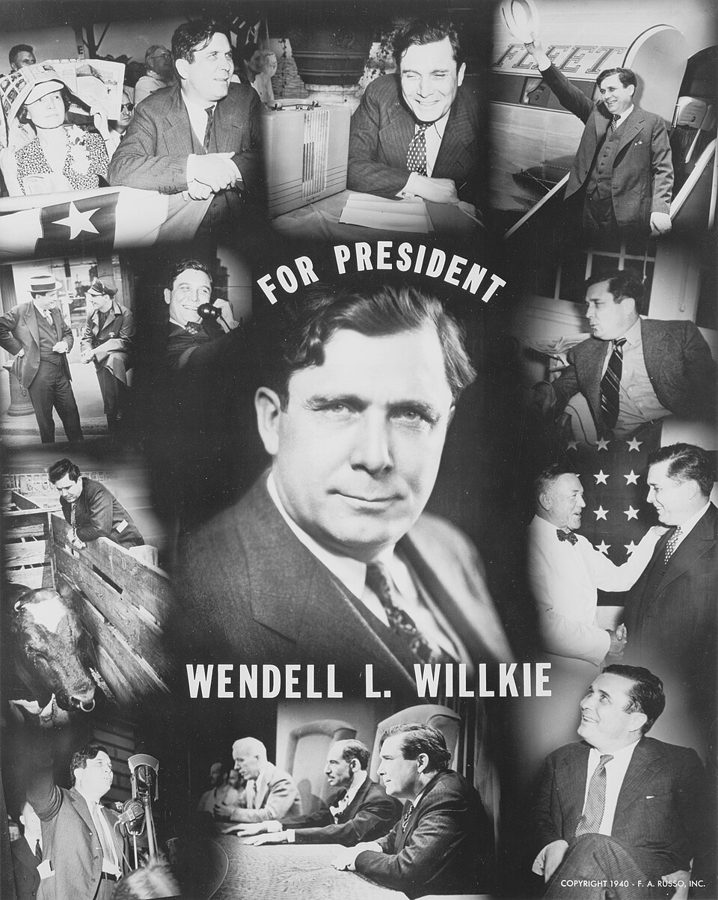

这一章在做什么
1939 年 5 月到 1942 年夏天，八岁到十二岁，纽约哈莱姆。一家人先在五楼的公寓里团聚，一年后又分开住。主线在学校：南方来的孩子先在班里垫底，中间跟着一伙人捣蛋、打架，最后进了最好的班，还给自己办成了转学。
读的时候盯住两样：班号一升一降，和他同 Mom 一点点拉远。
下城 downtown（南） 上城 uptown（北）
坐双层巴士去华盛顿广场，十来公里
中央公园
59–110 街
华盛顿广场
4 街上下
宾州车站
33 街
家（146 街口）
哈莱姆，145 街地铁站
1939 年 5 月：下了火车换地铁
从家往西走几条街：河滨大道和哈德逊河
本站示意图，街号按比例。曼哈顿的街从南往北编号，所以书里的 down to Washington Square 、went downtown 都是往南走；up to 150th Street 是往北。
出场的人
家里还是第 1 章那几个人，但有几个人的叫法变了；新出场的是一个榜样、一个女孩和一个婴儿。
Mom 就是第 1 章的 Mama 养母。第 2 节里作者交代改口，此后全书都叫 Mom。不许他上街，活动范围不出五条街。
Lacy /ˈleɪsi/，男；本名 James Birdie 的丈夫，在一户有钱的白人家当厨子。每晚听新闻，带他逛纽约。这几年他最亲近的大人。
Birdie 家里人叫她 Bert 在白人家帮工。送他去报名上学；1941 年怀孕。
Ruth /ruːθ/ 住在雇主家的女佣，很少回来。爱拿 Eddie Mapp 跟他比。
Eddie Mapp /mæp/，男孩，比他大一点 Birdie 和 Lacy 替他挑好的「榜样」，会弹钢琴。两人没成密友，但 Eddie 带他进了公共图书馆。
Mrs. Whitney /ˈwɪtni/ Lacy 的雇主太太，叫 Lacy 把他带去见一面。书里只说这家人有钱，没说是哪一家 Whitney。
Shirley /ˈʃɜːrli/，女孩 同屋房客 Anderson 先生的侄女，住新泽西，和他年纪相仿。漂亮，又像个假小子。
Jimmy James 的小名 Birdie 和 Lacy 的头一个孩子，第 8 节里出生，随父亲的名字。
5B1 的老师 没有名字 西印度群岛来的黑人女教师，他在纽约公立学校遇到的唯一一位黑人老师。
三处改口。 Mama 变成 Mom；Birdie 在第 8 节被他叫作 Bert（作者说家里只有 Lacy 一直叫她 Birdie）；夏令营里别的孩子叫他 Tommy。听书时这三个都是老熟人，不是新人物。
背景：作者默认你知道的事
章名是一首歌
In Old New York 出自 1906 年的轻歌剧 The Red Mill （Victor Herbert 作曲）。剧里两个流落在荷兰的美国人想家，唱起纽约的街道和姑娘，副歌头一句就是 In old New York!
这是一支怀旧的歌。作者写这一章也是这个口气：地铁、河滨大道、华盛顿广场，他都要补一句 in those days （那年头）。

老宾州车站的站台大厅，1930 年代中期。他八岁下火车时看到的就是这里。这座 1910 年启用的车站在 1960 年代拆掉了，今天的宾州车站在地下。
Berenice Abbott，公有领域，维基共享资源 哈莱姆：原来是给中产白人盖的
哈莱姆在曼哈顿北部。那里成排的公寓楼是 1900 年前后为白人中产盖的，房子盖多了租不出去，房东才开始租给黑人。到 1920 年代，它成了美国最有名的黑人聚居区。
所以作者说它还留着一点中产街区的样子。他家所在的 145 街以北那片高地叫 Sugar Hill（糖山），是哈莱姆里比较体面的一段，书里到后面才点这个名字。
1943 年 5 月，哈莱姆的报童。背后贴的是黑人报纸 People’s Voice 和 Pittsburgh Courier 的广告。Gordon Parks，公有领域，维基共享资源 
1936 年，停在华盛顿广场的双层巴士，远处是广场的拱门。Lacy 带他坐的就是这种车。Berenice Abbott，公有领域，维基共享资源
班号怎么读：4A3、5B1
P.S. 是 Public School，纽约的公立小学按号码叫。那时每个年级分 A、B 两个学期，九月和二月各升一次；同一年级再按成绩排班，1 班最好。4A3 就是四年级上学期的第三好的班。
小学读到六年级，七到九年级是初中（junior high school，书里缩写 J.H.S.）。put back 是降级，promoted 是升级。
4A 4B 5A 5B 6A 6B
1939 秋 1940 春 1940 秋 1941 春 1941 秋 1942 春
1 班 2 班 3 班 4 班 慢班
分到了，没去成
P.S. 5
P.S. 194（新校舍）
P.S. 5
本站示意图。中间几个学期的起止是按半年一升推算的，书里只给了 1939 年 9 月、1941 年夏天和 1942 年 2 月这几个时间。
收音机里的新闻

爱德华·默罗在 CBS 的话筒前，1947 年。CBS Radio，公有领域，维基共享资源 没有电视的年代，新闻靠收音机，一档十五分钟。书里点了四个播音员：Elmer Davis、Gabriel Heatter、体育记者 Stan Lomax，和爱德华·默罗（Edward R. Murrow）。
默罗是 CBS 驻伦敦的记者。1940 年 9 月起德国空军连续几个月夜袭伦敦（the Blitz），他在现场向美国直播。那时美国还没参战，要到 1941 年 12 月珍珠港之后。
1940 年大选和 Willkie

威尔基 1940 年的竞选海报。他们一伙人满街撕的就是这一类东西。F. A. Russo，公有领域，维基共享资源 1940 年罗斯福竞选第三个任期，此前没有总统做过三任。共和党的对手是企业界出身、没当过官的温德尔·威尔基（Wendell Willkie），书里拼作 Wilkie。结果罗斯福胜。
作者没说撕海报是出于什么立场，只说全伙人里只有他对政治有兴趣，主意多半是他出的。他把这件事和课堂上捣乱放在一起讲，当恶作剧写的。
电影里的「有色人种」
第 10 节夏令营里，一个白人小孩问他为什么不像电影里的 colored people 。1930 年代好莱坞给黑人演员的角色多半是仆人和丑角：说话慢吞吞、胆小、逗人笑。演这类角色最出名的是艺名 Stepin Fetchit 的演员。
没接触过黑人的白人孩子，印象就是从银幕上来的。colored 和 Negro 在当年都是通行的说法，不带贬义；今天已经不这么用。
留个记号：后面还会回来
这一段里作者有几处直接说了「当时不知道，这是个转折」。先记下。
公共图书馆 第 1 节 Eddie Mapp 带他去的。作者说这是一生的转折点，当时自己并不知道。后面每次他说「在图书馆」，都从这里来。
Mom 记起的那首歌 第 2 节 她预感这孩子会走远，有时念起一首盼浪子回家的老歌。这条线一直拉到本章最后一节。
「你比我们谁都走得远」 第 1、9 节 家里人要他抓住他们没有过的机会，他说这话后来听了一遍又一遍。留意以后是谁在说、是鼓励还是责备。
最后一扇门 第 7、9 节 他两次用了「拐弯」「门」这样的说法：一次是成绩回升，一次是转学办成。两个会再出现的名字也先记住：Eddie Mapp 和 Shirley。
词与短语
词条按书里出现的顺序排，小标题是原书用 • • • 隔开的各节。斜体小字是那句话里的几个词，在 Kindle 里搜它就能跳到那一句。单个的生词长按就能查，这里收的主要是词典帮不上忙的。
第 1 节 · 五楼的公寓和一座图书馆
in those days
… and sleek in those days—were a …
那年头（现在不是了）
这一页出现四次，每次都是在说「如今变了」。章名里的 old 就是这个意思。
fire escape
… was a fire escape hanging from …
楼外的铁制防火梯
纽约老公寓楼外墙上一层层的铁梯和平台。他出地铁第一眼看到的纽约。
double as
… on the street, doubled as a …
兼作
前屋白天是客厅，晚上是 Birdie 夫妇的卧室。
end table
… from one of the end tables. …
沙发两头的小边几
那张边几里装着收音机，所以他吃惊：桌子会出声。
built-in bathtub
… and a built-in bathtub, all for …
固定安装的浴缸
对照第 1 章：在夏洛特洗澡是把烧好的水倒进铁皮盆。
see much of someone
… not see as much of her. …
常见到某人
不是「看到她的大部分」。Ruth 住在雇主家（live-in maid），所以见得少。
when all is said and done
… when all was said and done, …
说到底
前面讲嘴上怎么说，这个短语后面才是实情：他其实想家。
hang around the house
… while I hung around the house …
在家里闲待着
这一节有四个 hang：hang around 闲待，hang out in the streets 在街上混，下面还有两个。Lacy 叫他别沾的 roughnecks 是粗野的家伙。
fall in with the wrong crowd
… fall in with the wrong crowd …
跟不三不四的人混到一起
fall in with = 结交上，多指不经意间。crowd 是「那一伙人」。
be sent on errands
… also be sent on errands, which …
被派去跑腿买东西
run an errand = 跑一趟腿。
time hung heavy
… however, time still hung heavy. …
日子难熬，闲得发慌
固定说法，完整的是 time hangs heavy on one’s hands 。
relent to the extent of
… Mama relented to the extent of …
松了口，但只松到……这一步
只准下楼对着自家的墙拍球，不准过马路。
hang out the window
… Mama hung out the top floor …
把身子探出窗外
不是「闲逛」的 hang out。她从五楼窗口探出身子盯着他。
choose such company
… and to choose such company, rather …
交这样的朋友
company = 来往的人，不是公司。
put him in another world
… which put him in another world, …
让他成了另一个世界的人
后面接 as far as I was concerned ：在我看来。
Chinese checkers
… introduced me to Chinese checkers and …
跳棋
名字里有 Chinese，其实是从德国传到美国的，和中国无关。
trade comic books
… where you could trade comic books …
拿看过的漫画书换别的
trade = 以物换物。comic books 是成册的漫画书，和第 1 章报纸上的 the comics 不是一样东西。
unknown to me at the time
… Unknown to me at the time, …
当时我自己并不知道
回忆录的标志句式：站在后来往回看。
something of an extravagance
… was considered something of an extravagance. …
算得上有点奢侈
something of a + 名词 = 多少算是个……。一个星期天买两份报，在这个家里就是奢侈。
第 2 节 · 变成纽约人
a concerted effort
… was a concerted effort on all …
齐心合力
concerted = 协同一致的，和音乐会无关。on all sides ：人人都在使劲。
yellow hair
… of them even had yellow hair. …
黄头发（金发）
成年人会说 blond。作者故意用八岁孩子的词，连 even 都是孩子的惊讶。
butter balls
… seeing Lacy make butter balls in …
黄油球
讲究人家的餐桌上，黄油要挖成一个个小球端上来。
a tiny movie in it
… to have a tiny movie in …
里面在放一场小电影
他不认识电视机，下一句才点破。电视机 1939 年才开始在纽约上市。他对黄油球的兴趣更大。
whatever … talk about
… whatever nine-year-old boys and middle-aged ladies …
九岁男孩和中年太太能聊的那些话
意思是聊了什么全忘了，也想不出能聊什么。
outgrow
… and games that they outgrew found …
长大了，用不上了
不是「长得比……高」。
find its way to
… What also found its way to …
辗转到了（我手里）
东西是主语，像它自己找上门来。
second-hand middle-class lifestyle
… a sort of second-hand middle-class lifestyle. …
二手的中产生活
东西是雇主家孩子用剩的，餐桌规矩和用词也是从雇主家学回来的。
ambivalent about
… over the years, ambivalent about my …
对……又喜又怨
读 /æmˈbɪvələnt/。后面一长串都在展开这个词：又骄傲，又恨自己被落下。
however arbitrarily
… assert her authority, however arbitrarily, and …
不管多么蛮不讲理
however + 副词 = 无论多么，不是「然而」。
never the strongest
… that our relationship—never the strongest—was completely …
本来就不算牢靠
往轻里说。夹在两个破折号里的四个词，是他对母子关系下的判断。unravel：线一根根松开。
Where Is My Wandering Boy Tonight
… “Oh, where is my wandering boy, …
《我那漂泊的孩子今夜在哪里》
19 世纪的福音歌曲，母亲盼离家的儿子回来。
第 3 节 · 不肯降级
the promotion would stick
… that the promotion would stick in …
升级在这儿还作数
stick = 保持有效，不被推翻。
put back a grade
… were routinely put back a grade. …
降一个年级
routinely：照例。南方来的黑人孩子一律先降一级。
have the spunk to
… that I had the spunk to …
有胆量去
口语，夸孩子有股冲劲。
as it turned out
… As it turned out, I probably …
后来的事证明
整句是自己拆自己的台：其实该降。
talk “funny”
… the South and talked “funny.” …
说话怪腔怪调
funny 这里是「怪」，不是「好笑」。指他的南方口音。
everybody “knew”
… Besides, everybody “knew” that Southern …
人人都「知道」
引号是反话：大家认定的事，其实不是事实。dumb 是笨。
spot
… away before anyone could spot me. …
认出来，盯上
spot 作动词。借朋友的外套是为了不被堵他的人认出来。
stand midway in the class
… I stood no higher than midway …
排在班里中游
stand = 名次排在。「进步最大」，也不过到中间。
第 4 节 · 又分开住，学坏了
split up
… 1940 our family split up again, …
拆开，各住各的
again 接的是第 1 章：在夏洛特一家人已经散过一次。
room in other people’s apartments
… and I were rooming in other …
在别人家的公寓里租一间住
room 作动词。这样的房客叫 roomer，第 6 节就出现。
sleep-in maid
… Ruth, as a sleep-in maid, was …
住在雇主家的女佣
也说 live-in maid，书里两种都用。
pick up
… I had already picked up enough …
（不知不觉）学到了
不是「捡起」。跟着 Lacy 听了一年新闻，习惯自己长出来了。
retrogress
… was beginning to retrogress somewhat. …
往回倒退
很书面的词，配上 somewhat（多少有点），是在轻描淡写。
a little too complete
… adjustment was a little too complete, …
融入得有点过头了
正话反说：他不再受欺负，是因为自己也成了捣蛋的一员。
by today’s standards
… terrible—certainly not by today’s standards—but …
照今天的标准看
顺手带一句对后来学校风气的评论。作者常这样插话。
the gang
… the only one in the gang …
我们这一伙
这里是一起玩的小团伙。第 3 节的 gangs 才是打群架的帮派。
keep after
… which often meant keeping after me …
盯着不放地催
sadly mistaken
… student behavior, he was sadly mistaken. …
大错特错
sadly 是加强语气，不是「悲伤地」。这句是冲着「盖新校舍就能改善纪律」的想法说的。
break up our little band
… to break up our little band …
把我们这一小伙人拆散
band = 一伙，不是乐队。
bedlam
… make the classroom a bedlam anytime …
闹翻了天的地方
读 /ˈbedləm/。来自伦敦一所老疯人院的名字。
not supposed to
… school system were not supposed to …
按规定不许
corporal punishment 是体罚。规定不许，有的老师照打。第 28 段他就拿这条规定回敬老师。
take after
… long ruler and took after me, …
追着我来
常见的意思是「长得像」，这里是美国口语：追赶。
only because my aim was bad
… belly—only because my aim was bad. …
那只是因为我没踢准
冷幽默。踢在小腹上不是手下留情，他瞄的本来是更要命的地方。
double over
… He doubled over in pain and …
疼得弯下了腰
和第 1 节的 double as （兼作）无关。
dare him to
… principal, which I dared him to …
我说「你敢你就去」
dare 某人 to do ：激他去做。老师自己违规在先，所以不敢。
第 5 节 · 西印度来的女老师
West Indian
… 5B1 was a West Indian black …
西印度群岛的
指加勒比海的岛屿（牙买加、巴巴多斯等，当时多是英国殖民地），和印度无关。哈莱姆有不少这样的移民。
cultivated bearing
… had the cultivated bearing of a …
有教养的仪态
bearing = 举止风度，不是轴承。
footlights
… that there were footlights in the …
脚灯
舞台前沿地板上的一排灯。这里嵌在地板的小门下面，所以没人见过。
a perfunctory gesture
… more than a perfunctory gesture toward …
做做样子，交差了事
gesture = 表示一下的姿态，不是手势。
do Shakespeare
… white schools, they did Shakespeare. …
演莎士比亚
do = 上演。她的班已经是全校最好，她看的却是白人学校的标准。
disruptive elements
… the few disruptive elements in the …
破坏纪律的分子
拿公文腔说自己。
put me in bad with
… important in putting me in bad …
让我在（老师）那里落了坏印象
be in bad with 某人 ，美国口语：不招他待见。
pop
… the room popping kids behind their …
用手指弹
弹的是耳朵后面，又脆又疼。
go at it
… As we were going at it, …
打得正凶
前面的 throwing punches 是挥拳。
guttersnipe
… instantly convinced that this guttersnipe had …
街头的野孩子
gutter 是路边的排水沟。这是借老师的眼睛看自己。
apply myself
… fair—I did not apply myself steadily …
用功
不是「申请」。fair 在成绩单上是「中等」；下半句的 conduct grades 是操行分，和各科成绩分开打。
“opportunity” class
… This was a so-called “opportunity” class. …
「机会」班，也就是慢班
班号里的 op。so-called 和引号都表示他不认这个名字。
euphemisms … even then
… Euphemisms were fashionable even then, but …
那时候就已经时兴委婉说法
euphemism 读 /ˈjuːfəmɪzəm/。even then 是说：别以为今天才这样。
第 6 节 · Shirley
roomers
… 1941, some other roomers—a couple named …
租一间屋的房客
other 说明他和 Mom 自己也是。
tomboyish
… but was also very tomboyish—the latter …
像个假小子
后半句的 the latter … the former ：后者指假小子，前者指漂亮。
deck
… on boxing gloves and she decked …
一拳把（我）打趴下
deck 作动词，口语。下一句的 virtually 是「差不多可以说」：挨了一拳，等于一见钟情。
shown in Sunday school
… and the movies shown in Sunday …
可以拿到主日学校里放
主日学校是教会星期天给孩子上的宗教课。意思是两人规矩得很。
第 7 节 · 回到 P.S. 5
out from under the protection of
… was also out from under the …
不再有……罩着
三个介词连用。离开那伙人，功课好了，挨欺负也多了。
be exposed to
… he wanted me to be exposed …
接触到，见识到
不是「被曝光」。
turn a corner
… time, I had turned another corner. …
拐过了一道弯（情况好转）
another：上一个弯是第 1 节的图书馆。
第 8 节 · Jimmy 出生
a bolt out of the blue
… like a bolt out of the …
晴天霹雳
bolt 是闪电，blue 是晴空。
no longer always welcome
… adults were no longer always welcome, …
已经不总是受欢迎
往轻里说：十一岁的男孩巴不得大人少管。后面的 much less 是「更谈不上」。
eight pounds and ten ounces
… baby—eight pounds and ten ounces. …
八磅十盎司，约 3.9 公斤
一磅 16 盎司。美国人报新生儿体重都这么说。
whistling in the dark
… it was just whistling in the …
给自己壮胆的话
走夜路吹口哨。他以为大人说孩子「大」是在自我安慰。
my heart went out to him
… My heart went out to him …
我一下子心疼起他来
named for
… little boy was named for his …
随……取的名
美式说法，等于第 1 章的 name after 。
第 9 节 · 最好的班，和转学
informal probation
… some sort of informal probation. …
没明说的察看期
probation 本是法律上的缓刑、试用期。
a checkered past
… I had a checkered past in …
不大光彩的履历
checkered：黑白格相间的，引申为有好有坏。通常用来说有前科的人，这里说的是待过 4 班。
going to have to be convinced
… going to have to be convinced. …
得让她看到真凭实据才行
前半句说她愿意被说服，后半句把同一个词再用一遍：愿意，但你得做到。
nose out
… of the class, often nosing out …
以一点点优势压过
赛马用语：赢一个鼻子。
got to be too much
… his frustration got to be too …
终于憋不住了
然后那个男生放学后把他揍了一顿（beat me up ）。作者只用了半句。
held up to me as a model
… was always being held up to …
总被举到我面前当榜样
make a case for
… we could make a case for …
拿得出申请……的理由
case = 一套站得住的理由。
the last door slammed shut
… last door might have slammed shut …
最后一扇门砰地关上
might have + 过去分词：本来可能，实际没有发生。
第 10 节 · 夏令营
as a second choice
… was selected (as a second choice) …
作为候补人选
括号里顺手拆自己的台：本来选的不是他。
courtesy of
… a summer camp, courtesy of some …
由……出钱
字面是「承蒙……的好意」。
go downtown
… When I went downtown to talk …
去下城（曼哈顿南边）
在曼哈顿，downtown 是方向，不是「市中心」。见页首的图。
a definite “policy” toward me
… have some definite “policy” toward me. …
对我得有个明确的「方针」
引号是讽刺：别人把他当一个要处理的问题，不当一个孩子。
structured role
… was usually in some structured role—teachers …
有固定身份的场合
对方是老师、店主，各有各的角色。夏令营里没有这层身份隔着。
vary all over the lot
… that they varied all over the …
什么样的都有
美国口语，= all over the place。
not much was at stake
… where not much was at stake, …
输赢都无关紧要
stake 是赌注。在一个出不了大事的地方先学到这一课。
Negroes
… of their ideas about Negroes. …
黑人（当年的规范用词）
读 /ˈniːɡroʊz/。作者写哪个年代就用哪个年代的词。
colored people
… act like the colored people I …
有色人种（指黑人）
这句开头的 How come 是口语的 why，后面不倒装。见上面「电影里的『有色人种』」。
stump
… That stumped me for a moment, …
把我问住了
stump 作名词是树桩。
值得停下来的句子
It was also my first encounter with the notion that people who think they are doing something noble don’t have to tell the truth.— 第 10 节，夏令营的主办人骗他说还有别的黑人孩子。本站译：我也是头一回碰上这种想法：自认为在做高尚事情的人，可以不讲真话。
主干是 It was my first encounter with the notion ，that 后面整个是 notion 的内容；who think they are doing something noble 修饰 people。
注意 think ：他没说这些人做的事不高尚，说的是他们「自认为」高尚。还有 first ：头一回，就是说后面还有。这是本站的看法：全书里他对「好心人」的戒备，从这句开始有了字面上的出处。
“Well, they get paid to act that way—and I don’t.”— 第 10 节，回答白人小孩「你怎么不像电影里的黑人」。本站译：「这个嘛，他们那样演是有人给钱的，我可没有。」
act 一语双关。小孩问的 act 是「举止」，他答的 act 是「演戏」。十二岁的孩子被问住之后给出的解释，是报酬决定行为：演员那样做是因为有人付钱。
作者没有借题发挥，下一句只写那个孩子松了一口气。最后临走时孩子哭了，也只用两个词。
检查一下理解
先在心里答，再点开。答错的那题，回书里把那一节再读（或再听）一遍。
1. 从第 2 节起书里的 Mom 是新出场的人吗？ 不是，就是第 1 章的 Mama，他的养母。全家都想让他变成纽约人，改口叫 Mom 是其中一项。他这时仍然以为她是亲生母亲。
2. 他找校长争来了不降级。作者认为自己当时争对了吗？ 他自己说多半是该降的。在夏洛特他是全班第一，进了 4A3 立刻垫底，作业做到哭。学期末拿到「进步最大」，名次也只到中游。这一节写的是他敢去争，不是他争得对。
3. 他踢了老师一脚，说 only because my aim was bad。这是在道歉吗？后来怎样？ 不是道歉，是玩笑：踢到小腹只是因为没瞄准。老师扬言去找校长，他反过来激老师去，因为老师先动手打人已经违规。两人此后互相提防，可下学期这位老师把他升进了最好的 5B1。
4. 5B1 之后他被分进 “5B-6A op”。为什么？他去上了吗？ 原因是操行分全是差，功课本身是中等；和老师儿子打的那一架大概也有关系。op 是所谓的「机会班」，谁都知道是给笨孩子的。他没去上：暑假里搬家跨了学区，转回 P.S. 5，那里没有这种班，他进了 6A2。
5. 他请老师把他升进初中的 R 班，可分去的那所初中根本没有 R 班。那他图什么？ 图个名义。Ruth 老拿在 R 班的 Eddie Mapp 压他，有了「升入 R 班」这一条，他就能把那句话反问回去。真正要紧的是另一件事：他磨着 Mom 去学校签字，转到了一所更好的初中。
6. 夏令营的主办人骗了他什么？那个小孩的问题是恶意的吗？ 他们说营里还会有别的黑人孩子，其实他是头一个，这是一次试验。那个小孩不是恶意：他只在电影里见过黑人，真想弄明白，问完松了口气，两星期后来送行还哭了。